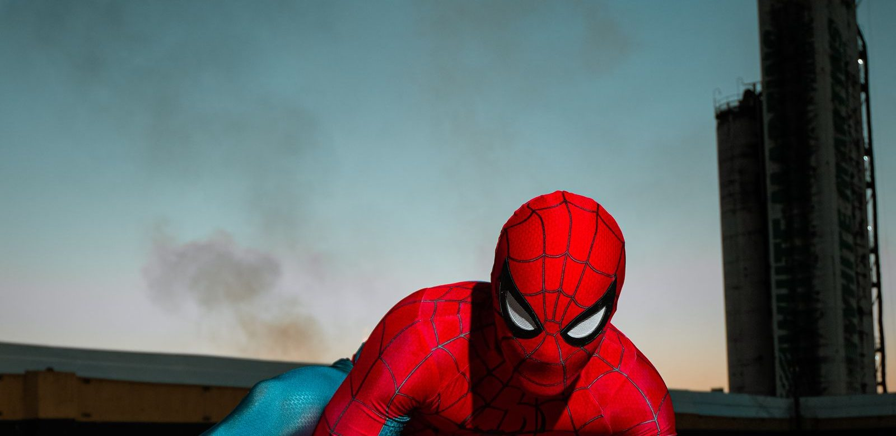

Spider-Man maskers en verkleedpakken
Niets is zo leuk als zelf Spider-Man worden. Met het juiste masker en pak kruip je zo in de huid van je favoriete held.

In het kort
Er zijn vier soorten: een los masker, een pak met los masker, een pak met spieren erin en een setje met cape en handschoenen. Voor een kind tot een jaar of zes is een pak met een los masker bijna altijd de beste keuze: het masker kan af als het warm wordt of als het kind even iets wil drinken, en het pak blijft gewoon aan.
| Soort | Wat het is | Voor wie |
|---|---|---|
| Los masker | Een stoffen kap over het hele hoofd, of een half masker met elastiek | Voor een feestje of als aanvulling op een shirt dat je al hebt |
| Pak met los masker | Een pak uit een stuk, met het masker apart | De veiligste keuze voor kinderen van drie tot zes jaar |
| Pak met spieren | Een pak met opgevulde armen en borst, voor het echte heldenfiguur | Vanaf een jaar of vijf, voor wie er echt in wil opgaan |
| Cape en handschoenen | Een setje om over gewone kleren heen te dragen | Voor de jongste kinderen, of als schoencadeau |
Welke pakken er zijn
Spider-Man draagt niet altijd hetzelfde pak. Dit zijn de pakken die je het vaakst als verkleedpak tegenkomt, met waar ze vandaan komen:
- Het klassieke rood-blauwe pak. Het pak van Peter Parker sinds zijn eerste strip in 1962: rood met blauw, met zwarte weblijnen en een spin op de borst.
- Het zwarte pak. Zwart met een grote witte spin, voor het eerst in de strips in 1984. Dit is ook het pak waar Venom uit voortkomt.
- Het pak van Miles Morales. Zwart met rode weblijnen en een rode spin. Miles is de tweede Spider-Man, en sinds de film Spider-Man: Into the Spider-Verse uit 2018 bij veel kinderen de favoriet. Meer over hem lees je in wie is Miles Morales.
- Iron Spider. Rood met goud, het pak dat Peter van Iron Man krijgt in de film Avengers: Infinity War uit 2018.
- Het nieuwe pak uit Brand New Day. De film Spider-Man: Brand New Day draait sinds 30 juli 2026 in de bioscoop, en de pakken uit die film staan inmiddels ook als verkleedpak in de winkel.
Welke maat past bij welke leeftijd?
Kinderkleding in Nederland heeft de lengte van het kind in centimeters als maat. Bij verkleedpakken staat er vaak een leeftijd bij, en die loopt niet altijd gelijk met de maat. Ga daarom uit van de lengte van je kind, niet van de leeftijd op de verpakking.
| Maat | Lengte van het kind | Ongeveer de leeftijd |
|---|---|---|
| 104 | tot 104 cm | 3 tot 4 jaar |
| 116 | tot 116 cm | 5 tot 6 jaar |
| 128 | tot 128 cm | 7 tot 8 jaar |
| 140 | tot 140 cm | 9 tot 10 jaar |
Zo kies je het goede pak, in vijf stappen
- Meet je kind op. Zit het tussen twee maten in, neem dan de grotere. Een pak uit een stuk dat te kort is, trekt bij de schouders en scheurt als eerste bij het kruis.
- Kies een los masker. Een masker dat aan het pak vastzit, moet er helemaal af als het kind het warm krijgt. Een los masker gaat even omhoog en weer terug.
- Kijk door de ogen van het masker. Het gaas voor de ogen moet echt doorzichtig zijn. Een kind dat slecht ziet, struikelt, en op een schoolplein of een trap is dat geen grap.
- Zoek het CE-teken. Verkleedkleding voor kinderen valt onder de Europese regels voor speelgoed. Het CE-teken op het label of de verpakking betekent dat het pak onder meer op brandbaarheid getest hoort te zijn.
- Was het pak voordat het aan gaat. Nieuwe verkleedpakken ruiken vaak naar de fabriek. Kijk op het label of het in de machine mag; pakken met spieren zijn vaak alleen handwas.
👪 Tip voor ouders
Voor een kinderfeestje in december of een carnavalsoptocht in februari: een Spider-Man-pak is dun. Laat het kind er een lange onderbroek en een shirt onder dragen, of koop het pak een maat groter zodat er iets warms onder past.
Onze keuzes
Drie keuzes, een voor elke soort. De aantallen beoordelingen zijn bij verkleedpakken laag, dat staat er per keuze eerlijk bij.
Spider-Man cape met masker
Een cape en een masker, verder niets. Dat klinkt mager, maar voor een kleuter is het vaak precies goed: het gaat in tien tellen aan en uit, het kind houdt zijn eigen warme kleren aan, en niemand hoeft naar de wc te helpen met een pak uit een stuk. Van alle verkleedspullen die we bekeken is dit de enige met een flink aantal beoordelingen.
- Ruim dertig beoordelingen, en goed beoordeeld
- Over gewone kleren heen, dus ook buiten en in de winter
- Klein genoeg voor een schoencadeau
- Geen pak, dus een ouder kind vindt het te weinig
- Niet direct op voorraad
Rubie's Spider-Man pak, deluxe
Het klassieke rood-blauwe pak van Rubie's, de maker achter veel officiële verkleedpakken. Dit exemplaar is maat 104, dus voor een kind tot ongeveer een meter; kijk bij bol welke andere maten er zijn voordat je bestelt. Voor wie het echte pak wil zonder de spieren erin, is dit de keuze.
- Het klassieke pak, zoals Spider-Man het in de strips draagt
- Van een bekende maker van verkleedpakken
- Het masker hoort erbij
- Pas twee beoordelingen bij bol, dus daar kun je weinig uit opmaken
- Deze uitvoering is maat 104; een ouder kind heeft een andere maat nodig
Spider-Man pak met spieren
Een pak met opgevulde armen en borst, zodat een kind er meteen uitziet als de held op de filmposter. Dat is leuk voor een verkleedfeest of een optocht, en minder handig om de hele dag in te spelen: opvulling is warm. Daarom zouden wij hem pas geven aan een kind dat al weet wat het wil.
- Ziet eruit als het pak uit de film
- Voor een feest of carnaval het meest indrukwekkend
- Op voorraad
- Pas twee beoordelingen bij bol, dus daar kun je weinig uit opmaken
- De duurste keuze op deze pagina
- Warm, dus niet om de hele dag in te rennen
Meer maskers en pakken
Deze pakken en maskers staan nu ook bij bol. Kijk bij elk pak naar de maat en de leeftijd op de verpakking:
Wat wij niet zouden kopen
Pakken voor volwassenen in een kindermaat. Bij bol staan veel pakken die voor volwassenen gemaakt zijn en in maat S verkocht worden. Die passen een kind niet, ook niet een groot kind. Kijk altijd of er een maat in centimeters bij staat.
Maskers met lampjes en een batterijvakje dat open kan. Zit er een platte knoopcelbatterij in en gaat het klepje zonder schroefje open, dan is dat voor jonge kinderen gevaarlijk als ze de batterij inslikken. Kies bij een lichtgevend masker er een met een vastgeschroefd klepje.
💡 Wist je dat?
Het klassieke pak van Spider-Man werd in 1962 bedacht door tekenaar Steve Ditko. Omdat het masker het hele gezicht bedekt, zie je niet wie eronder zit, en kan elk kind zich voorstellen dat het er zelf in staat.
Hoe wij gekozen hebben
Met de hand uitgezocht bij bol, op soort, leeftijd en beoordelingen, en elk product via zijn eigen nummer nagekeken. Heeft een product weinig beoordelingen, dan zeggen we dat erbij in plaats van het weg te laten. Koop je via een van onze links, dan krijgen wij een kleine vergoeding van bol; dat kost jou niets extra en het bepaalt niet wat hier staat. Gecontroleerd op 21 september 2026.
Compleet maken? Lees onze web shooter gids, of kijk bij alles over Spider-Man.